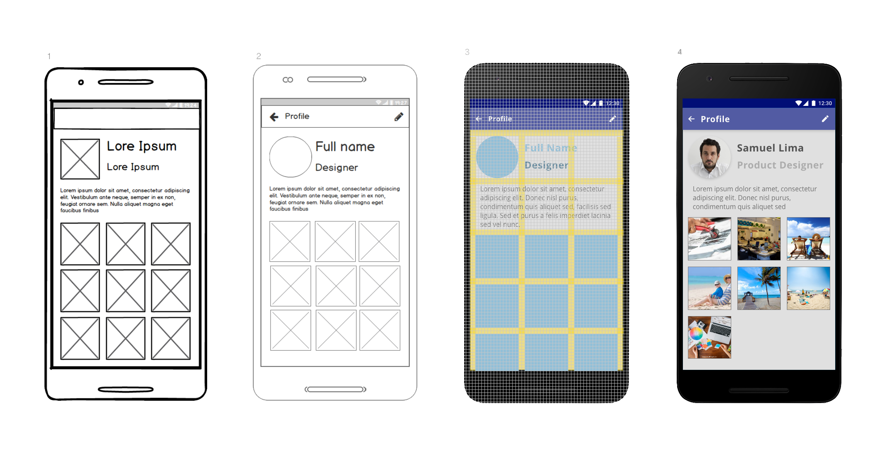
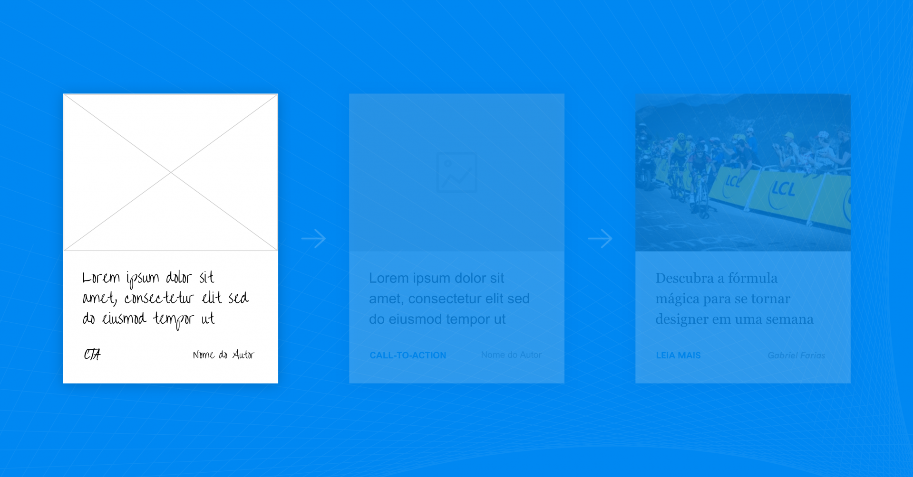
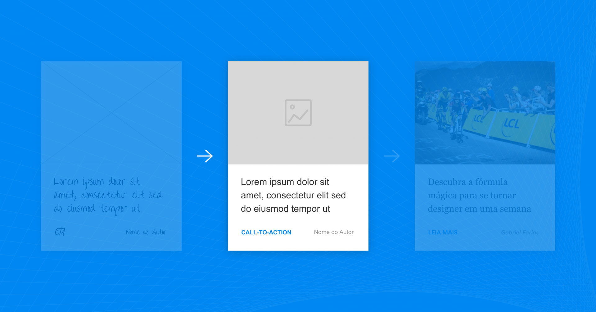
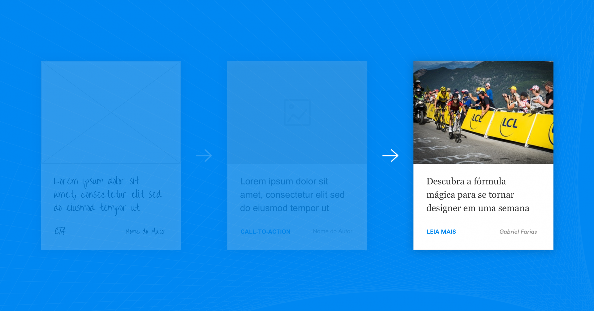

Prototipação
O protótipo é uma versão simulada ou amostra de um produto final, a utilizada para testes antes do lançamento.

Para desenvolver um bom protótipo, é preciso conhecer seus diferentes tipos e diferentes objetivos, diretamente relacionados a quem se destina. Com isso, pode-se categorizar os protótipos em 3 principais tipos:
- Desenvolvedores: quando o protótipo tem como objetivo guiar o desenvolvedor para sua implementação.
- Patrocinadores: quando o protótipo tem como objetivo validar com o patrocinador do produto se realmente é aquilo que ele tinha em mente.
- Usuários: quando o protótipo tem como objetivo realmente validar com o utilizador e buscar feedbacks para melhorar o produto em si.
Nivel de fidelidade, a qual pode-se medir por 3 parâmetros básicos:
- Visual: nível da fidelidade de cores, ícones, componentes, botões, backgrounds, mensagens de texto, entre outros.
- Conteúdo: nível de fidelidade do conteúdo simulado no protótipo.
- Interatividade: nível de fidelidade da comunicação/interação entre produto e utilizador.
| Prototipação em Baixa Fidelidade |
Prototipação em Média Fidelidade |
Prototipação em Alta Fidelidade |
|  |
 |
 |
Ferramentas